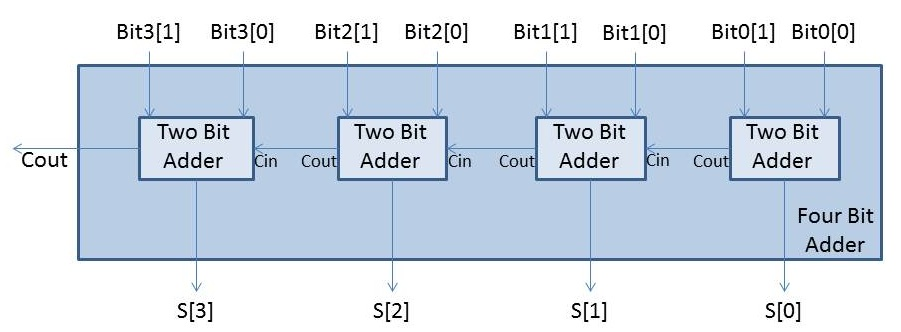

Example circuits
This package Example circuits contains some useful examples to demonstrate how the library is working and how the models can be used.
Extends from Modelica.Icons.ExamplesPackage (Icon for packages containing runnable examples).
| Name | Description |
|---|---|
| Simple inverter circuit | |
| Two inverters where transistor models use different modelcard instances | |
| Two inverters with MOS models defined by inheritance | |
| Four inverters with MOSFET level 1, using private record as model card | |
| MOS Nand gate circuit | |
| MOS NOR gate circuit | |
| Graetz rectifier circuit | |
| Oscillator circuit | |
| Simple differential pair | |
| Mos output characteristics | |
| Simple RTL inverter | |
| ADDER - 4 BIT ALL-NAND-GATE BINARY ADDER |
 Modelica.Electrical.Spice3.Examples.Inverter
Modelica.Electrical.Spice3.Examples.InverterSimple inverter circuit
An inverter is an electrical circuit that consists of a PMOS and a NMOS transistor. Its task is to turn the input voltage from high potential to low potential or the other way round.
Simulate until 1.e-11 s. Display the input voltage Vin.p.v as well as the output voltage mp.S.v. It shows that the input voltage is inverted.
Extends from Modelica.Icons.Example (Icon for runnable examples).
Modelica.Electrical.Spice3.Examples.InvertersApartRecordTwo inverters where transistor models use different modelcard instances
An inverter is an electrical circuit that consists of a PMOS and a NMOS. Its task is to turn the input voltage from high potential to low potential or the other way round. This circuit InverterApartModel contains two inverters. The input voltage of the first inverter is nearly equal to the output voltage of the second inverter. Capacities cause some differences.
To see the typical behavior of the circuit the input voltages and the output voltages should be plotted. Besides that it can be interesting to watch the output voltage of the first inverter. Simulated until t=5s.
Input voltages: vin.p.v and v.p.v
Output voltage of the first inverter: mn1.ND.v
Output voltage of the second Inverter: mn2.ND.v
This example shows one possibility to make the record of the technology parameters available for more than one transistor. For each transistor in the circuit a record with the technology parameters is made available as an instance of the record modelcardMOS. In this circuit we need two different records for technology parameters, one for PMOS (MPmos) and one for NMOS (MNmos). This instances of the record for the technology parameters were made available for every transistor as one of theirs parameters (Spice3.Repository.MOS mn1(mtype=0, modelcard=MNmos).
Extends from Modelica.Icons.Example (Icon for runnable examples).
| Name | Description |
|---|---|
| MPmos | Specified modelcardMOS for MPmos |
| MNmos | Specified modelcardMOS for MNmos |
Modelica.Electrical.Spice3.Examples.InvertersExtendedModelTwo inverters with MOS models defined by inheritance
An inverter is an electrical circuit that consists of a PMOS and a NMOS. Its task is to turn the input voltage from high potential to low potential or the other way round. This circuit InverterExtendedModel contains two inverters. The input voltage of the first inverter is nearly equal to the output voltage of the second inverter. Capacities cause some differences.
To see the typical behavior of the circuit the input voltages and the output voltages should be plotted. Besides that it can be interesting to watch the output voltage of the first inverter. Simulated until t=5s.
Input voltages: vin.p.v and v.p.v
Output voltage of the first inverter: mn1.ND.v
Output voltage of the second Inverter: mn2.ND.v
This example shows one possibility to make the record of the technology parameters available for more than one transistor. For each set of technology parameters an apart model has to be defined (in this example: MPmos ans MNmos). Inside the model definition the technology parameters are appointed (Spice3.Semiconductors.modelcardMOS M(GAMMA=0.37, LAMBDA=0.02)). Every model extends a transistor. In this process the required technologieparameters are specified (extends Spice3.Repository.MOS(final mtype=1, modelcard=M). To make transistors available in the circuit instances of the defined models are applied (MPmos mp1; MNmos mn1; MPmos mp2; MNmos mn2;).
Extends from Modelica.Icons.Example (Icon for runnable examples).
Modelica.Electrical.Spice3.Examples.FourInvertersFour inverters with MOSFET level 1, using private record as model card
This circuit that contains four inverter was designed to show the functionality of the MOS transistor models. To see the behavior of the circuit the output voltages of each inverter should be displayed (mp1.NS.v, mp2.NS.v, mp3.NS.v, mp4.NS.v). The output voltages of the second an fourth inverter and the input voltage of the first inverter have the same potential. The output voltages of the first and third inverter have the opposite potential compared with inverter 2 and 4.
Simulate until t=5s. The output values should be: mp1.NS.v, mp2.NS.v, mp3.NS.v, mp4.NS.v and vgate.p.v
Extends from Modelica.Icons.Example (Icon for runnable examples).
| Name | Description |
|---|---|
| modp | private PMOS modelcard |
| modn | private NMOS modelcard |
Modelica.Electrical.Spice3.Examples.NandMOS Nand gate circuit
In nearly every electronic the basic circuit "nand" are used. A nand contains two PMOS and two NMOS. The faulty wiring can be seen in the graphical mode. If and only if the two input voltages have high potential, the output voltage has low potential, otherwise the output voltage has high potential.
Nand truth table (1 means true, it is represented by the 5V voltage):
input voltage vin1 |
input voltage vin2 |
output voltage mNMOS1.NS |
0 |
0 |
1 |
0 |
1 |
1 |
1 |
0 |
1 |
1 |
1 |
0 |
Simulate until t=2e-7s. Display the two input voltages vin1.p.v and vin2.p.v and the output voltage mNMOS1.ND.v, which becomes zero only if both input values are high.
Extends from Modelica.Icons.Example (Icon for runnable examples).
Modelica.Electrical.Spice3.Examples.NorMOS NOR gate circuit
In nearly every electronic the basic circuit "nor" is used. A nor contains two PMOS and two NMOS. The faulty wiring can be seen in the graphical mode. If and only if the two input voltages have low potential, the output voltage has high potential, otherwise the output voltage has low potential.
Nor truth table (1 means true, it is represented by the 5V voltage):
input voltage vin1 |
input voltage vin2 |
output voltage m_PMOS1.NS |
0 |
0 |
1 |
0 |
1 |
0 |
1 |
0 |
0 |
1 |
1 |
0 |
Simulate until t=5s. Display the two input voltages vin1.p.v and vin2.p.v and the output voltage mPMOS1.NS.v.
The output value in the example shows a behaviour "near" the one of the truth table, since the capacitances are huge. Therefore loading is not finished before the next input changes.
Extends from Modelica.Icons.Example (Icon for runnable examples).
Modelica.Electrical.Spice3.Examples.GraetzGraetz rectifier circuit
The Graetz rectifier circuit is to show the behaviour of diodes.
Simulator until 0.025 s. Then display the input voltage vsin.p.v. The rout.p.v voltage is the rectified voltage result, which is pulsing mostly in the positive range.
Extends from Modelica.Icons.Example (Icon for runnable examples).
Modelica.Electrical.Spice3.Examples.OscillatorOscillator circuit
The oscillator circuit demonstrates the usage of BJT transistors.
Simulate until 0.025 s. Display v.p.v, which is rising until 5 V. Furthermore display r4.p.v, which starts oscillating.
Extends from Modelica.Icons.Example (Icon for runnable examples).
Modelica.Electrical.Spice3.Examples.CoupledInductorsThe coupled inductor circuit demonstrates how different inductors can be coupled using the Component K_CoupledInductors from package Basic
Simulate until 0.2s, and display the behaviour of the parts that are coupled via K, such as C1.p.v, and C2.p.v.
Extends from Modelica.Icons.Example (Icon for runnable examples).
Modelica.Electrical.Spice3.Examples.CascodeCircuitThis model is a simple JFET cascode circuit. The J2 gate variation (v_sin.p.v) is transformed to the J2 drain variation (J2.D.v).
Simulate until 0.2s, and display the mentioned voltages.
Extends from Modelica.Icons.Example (Icon for runnable examples).
Modelica.Electrical.Spice3.Examples.Spice3BenchmarkDifferentialPairSimple differential pair
This Differential pair model is one of the five benchmark circuits described in the SPICE3 Version e3 User's Manual (see information of package Spice3).
The differential pair circuit is operating in the differential mode. This means the input voltage VIN that is only applied at one transistor is amplified. To comprehend this behavior the user is recommended to simulate from t=0 to t=1s and observe "VIN.p.v" which is the input voltage and "Outputvoltage" which is the amplified output voltage.
Original SPICE3 netlist of the Differential pair:
SIMPLE DIFFERENTIAL PAIR
VCC 7 0 12
VEE 8 0 -12
VIN 1 0 AC 1
RS1 1 2 1K
RS2 6 0 1K
Q1 3 2 4 MOD1
Q2 5 6 4 MOD1
RC1 7 3 10K
RC2 7 5 10K
RE 4 8 10K
.MODEL MOD1 NPN BF=50 VAF=50 IS=1.E-12 RB=100 CJC=.5PF TF=.6NS
.TF V(5) VIN
.AC DEC 10 1 100MEG
.END
In the Modelica representation the tiny capacity CJC was set to 1.e-9F to get a higher numerical robustness. In future the numerical behavior will be analysed to be able to apply the original value CJC=.5PF.
Extends from Modelica.Icons.Example (Icon for runnable examples).
| Name | Description |
|---|---|
| MOD1 |
Modelica.Electrical.Spice3.Examples.Spice3BenchmarkMosfetCharacterizationMos output characteristics
This Mosfet Characterization model is one of the five benchmark circuits described in the SPICE3 Version e3 User's Manual (see information of package Spice3).
This circuit is a very simple one than consists of an NMOS transistor level 1 that is connected to voltage sources at gate and drain node whereas the drain voltage source supplies the operating voltage. The user is recommended to simulate from t=0 to t=1e-7s and observe the gate node voltage ("VGS.p.v") and the transistor current ("M1.D.i"). It can be seen that the current is increasing with increasing gate voltage which means the conductivity of the transistor is increasing. The opposite case occurs for decreasing gate voltage.
Original SPICE3 netlist of the MOSFET characterization circuit:
MOS OUTPUT CHARACTERISTICS
.OPTIONS NODE NOPAGE
VDS 3 0
VGS 2 0
M1 1 2 0 0 MOD1 L=4U W=6U AD=10P AS=10P
*VIDS MEASURES ID, WE COULD HAVE USED VDS, BUT IT WOULD BE NEGATIVE VIDS 3 1 .MODEL MOD1 NMOS VTO=-2 NSUB=1.0E15 UO=550
.DC VDS 0 10 .5 VGS 0 5 1
.END
Extends from Modelica.Icons.Example (Icon for runnable examples).
| Name | Description |
|---|---|
| MOD1 |
Modelica.Electrical.Spice3.Examples.Spice3BenchmarkRtlInverterSimple RTL inverter
This RTL Inverter model is one of the five benchmark circuits described in the SPICE3 Version e3 User's Manual (see information of package Spice3).
This simple RTL inverter (resistor transistor logic) circuits inverts the input voltage which means the output voltage has high potential if the input voltage has low potential and the other way round. To comprehend this behaviour the user is recommended to simulate from t=0 to t=1e-7s and observe the input voltage (VIN.p.v) and the output voltage (Q1.C.v)
Original SPICE3 netlist of the RTL inverter:
SIMPLE RTL INVERTER
VCC 4 0 5
VIN 1 0 PULSE 0 5 2NS 2NS 2NS 30NS
RB 1 2 10K
Q1 3 2 0 Q1
RC 3 4 1K
.MODEL Q1 NPN BF 20 RB 100 TF .1NS CJC 2PF
.DC VIN 0 5 0.1
.TRAN 1NS 100NS
.END
Extends from Modelica.Icons.Example (Icon for runnable examples).
| Name | Description |
|---|---|
| Q11 |
Modelica.Electrical.Spice3.Examples.Spice3BenchmarkFourBitBinaryAdderADDER - 4 BIT ALL-NAND-GATE BINARY ADDER
This Four Bit Binary Adder model is one of the five benchmark circuits described in the SPICE3 Version e3 User's Manual (see information of package Spice3).
The model adds two 4-bit numbers (Number A and Number B). It has eight inputs where the first one is the lowest-order bit of the first number (Number A Bit0), the second is the lowest-order bit of the second number (Number B Bit0), the third one is the second-order bit of the first number (Number A Bit1) and so on. The Four Bit Binary Adder has four outputs where the first one (Sum Bit0) is the lowest-order bit, the second and the third one (Sum Bit1 and Sum Bit2) are the next two bits and the last one (Sum Bit3) is the highest-order bit. The picture illustrates the pin-assignment.

Inside the model the names of the inputs refer to the names in the picture as follows:
X1_p1_v --> Number A Bit0
X1_p2_v --> Number B Bit0
X1_p3_v --> Number A Bit1
X1_p4_v --> Number B Bit1
X1_p5_v --> Number A Bit2
X1_p6_v --> Number B Bit2
X1_p7_v --> Number A Bit3
X1_p8_v --> Number B Bit3
X1_p9_v --> Sum Bit0
X1_p10_v --> Sum Bit1
X1_p11_v --> Sum Bit2
X1_p12_v --> Sum Bit3
X1_p14_v --> Cout
The Four Bit Binary Adder is built out of two two bit adders which respectively are built out of two one bit adders. One one bit adder is build out of nine NAND circuits.
Please note, that the simulation time of the Four Bit Binary Adder can take several hours due to its immense size (e.g. 11387 equations).
The user is recommended to simulate from t=0 to t=1e-6s and observe the eight inputs (X1_p1_v, ..., X1_p8_v) and the four outputs (X1_p9_v, ..., X1_p12_v) and the carryout output (X1_p14_v).
The timing of the single transistors of the adder causes a delay which makes it hard to recognize the adder behaviour. Since the Four Bit Binary Adder is a SPICE3 benchmark, the circuit is not changed in order to see the adder behaviour in a better way.
Original SPICE3 netlist of the Four Bit Binary Adder:
ADDER - 4 BIT ALL-NAND-GATE BINARY ADDER *** SUBCIRCUIT DEFINITIONS .SUBCKT NAND 1 2 3 4 * NODES: INPUT(2), OUTPUT, VCC Q1 9 5 1 QMOD D1CLAMP 0 1 DMOD Q2 9 5 2 QMOD D2CLAMP 0 2 DMOD RB 4 5 4K R1 4 6 1.6K Q3 6 9 8 QMOD R2 8 0 1K RC 4 7 130 Q4 7 6 10 QMOD DVBEDROP 10 3 DMOD Q5 3 8 0 QMOD .ENDS NAND .SUBCKT ONEBIT 1 2 3 4 5 6 * NODES: INPUT(2), CARRY-IN, OUTPUT, CARRY-OUT, VCC X1 1 2 7 6 NAND X2 1 7 8 6 NAND X3 2 7 9 6 NAND X4 8 9 10 6 NAND X5 3 10 11 6 NAND X6 3 11 12 6 NAND X7 10 11 13 6 NAND X8 12 13 4 6 NAND X9 11 7 5 6 NAND .ENDS ONEBIT .SUBCKT TWOBIT 1 2 3 4 5 6 7 8 9 * NODES: INPUT - BIT0(2) / BIT1(2), OUTPUT - BIT0 / BIT1, * CARRY-IN, CARRY-OUT, VCC X1 1 2 7 5 10 9 ONEBIT X2 3 4 10 6 8 9 ONEBIT .ENDS TWOBIT .SUBCKT FOURBIT 1 2 3 4 5 6 7 8 9 10 11 12 13 14 15 * NODES: INPUT - BIT0(2) / BIT1(2) / BIT2(2) / BIT3(2), * OUTPUT - BIT0 / BIT1 / BIT2 / BIT3, CARRY-IN, CARRY-OUT, VCC X1 1 2 3 4 9 10 13 16 15 TWOBIT X2 5 6 7 8 11 12 16 14 15 TWOBIT .ENDS FOURBIT *** DEFINE NOMINAL CIRCUIT .MODEL DMOD D .MODEL QMOD NPN(BF=75 RB=100 CJE=1PF CJC=3PF) VCC 99 0 DC 5V VIN1A 1 0 PULSE(0 3 0 10NS 10NS 10NS 50NS) VIN1B 2 0 PULSE(0 3 0 10NS 10NS 20NS 100NS) VIN2A 3 0 PULSE(0 3 0 10NS 10NS 40NS 200NS) VIN2B 4 0 PULSE(0 3 0 10NS 10NS 80NS 400NS) VIN3A 5 0 PULSE(0 3 0 10NS 10NS 160NS 800NS) VIN3B 6 0 PULSE(0 3 0 10NS 10NS 320NS 1600NS) VIN4A 7 0 PULSE(0 3 0 10NS 10NS 640NS 3200NS) VIN4B 8 0 PULSE(0 3 0 10NS 10NS 1280NS 6400NS) X1 1 2 3 4 5 6 7 8 9 10 11 12 0 13 99 FOURBIT RBIT0 9 0 1K RBIT1 10 0 1K RBIT2 11 0 1K RBIT3 12 0 1K RCOUT 13 0 1K *** (FOR THOSE WITH MONEY (AND MEMORY) TO BURN) .TRAN 1NS 6400NS UIC .control run set options no break *plot v(1) v(2) *plot v(3) v(4) *plot v(5) v(6) *plot v(7) v(8) *plot v(9) v(10) *plot v(11) v(12) *plot v(13) *print v(9) v(10) print v(11) v(12) v(13) .endc .END
The model is built out of several subcircuits which were described only ones and used several times.
Extends from Modelica.Icons.Example (Icon for runnable examples).
| Name | Description |
|---|---|
| DMOD | |
| QMOD |